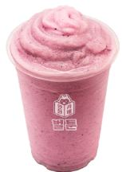
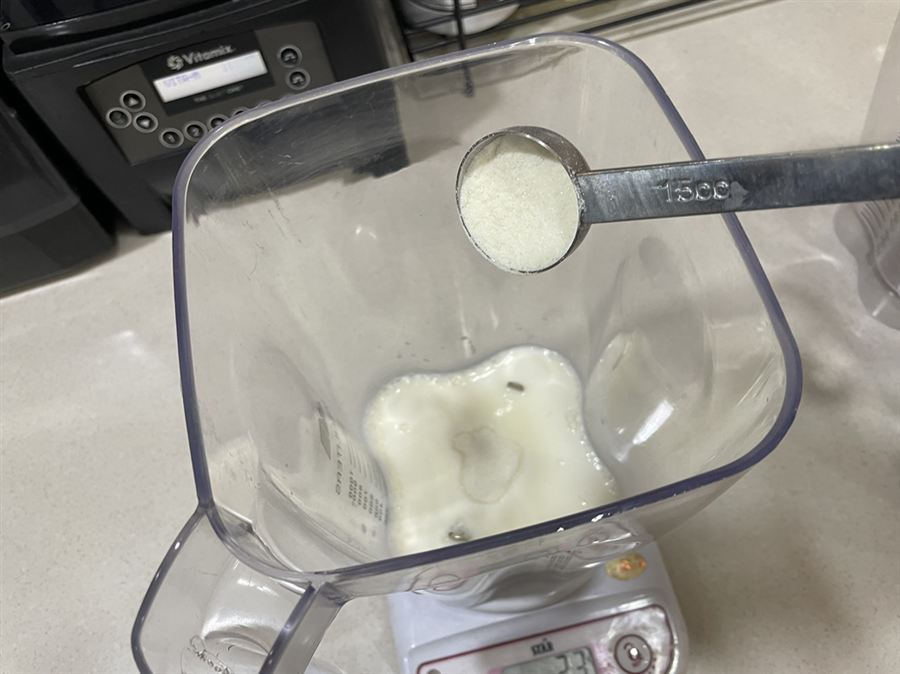
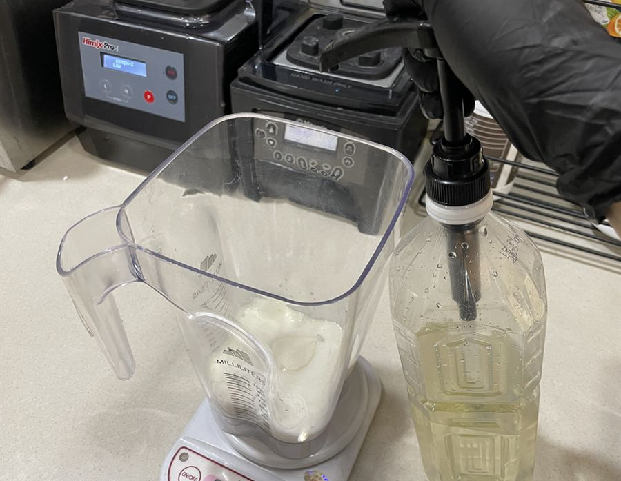
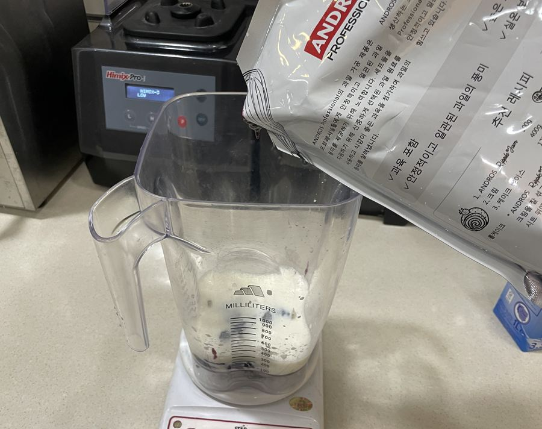
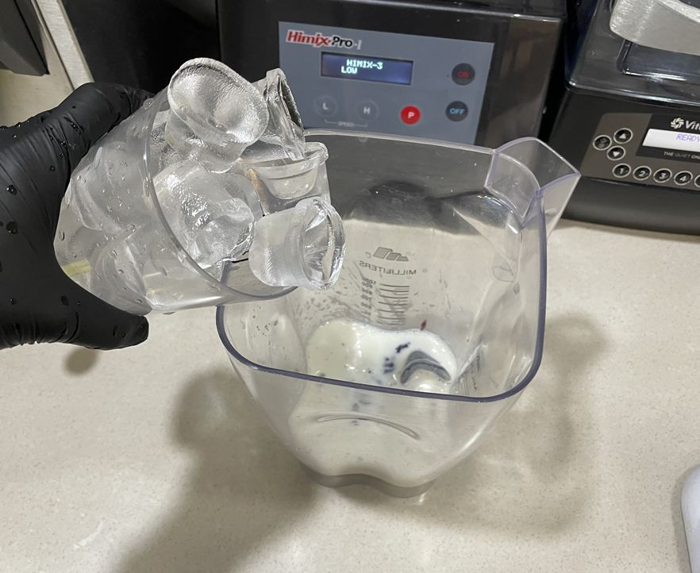
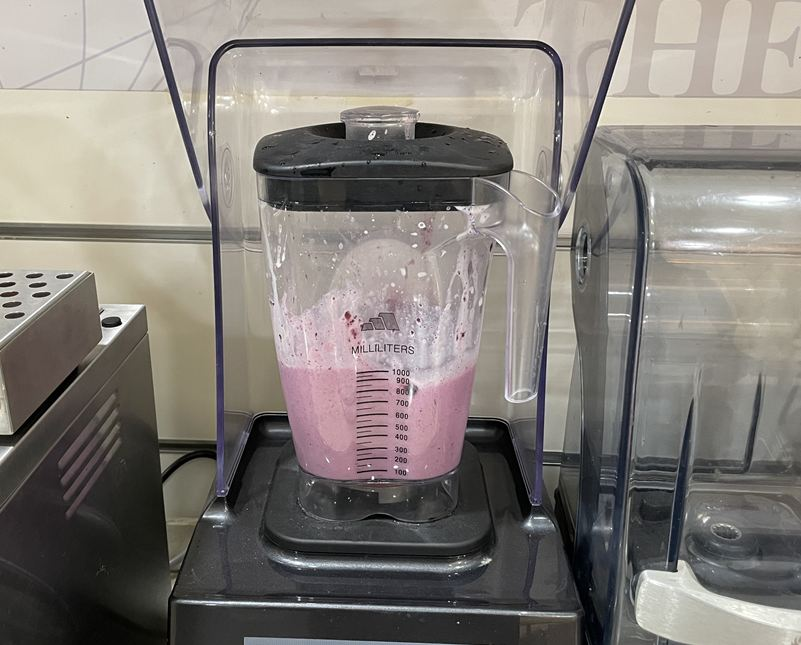
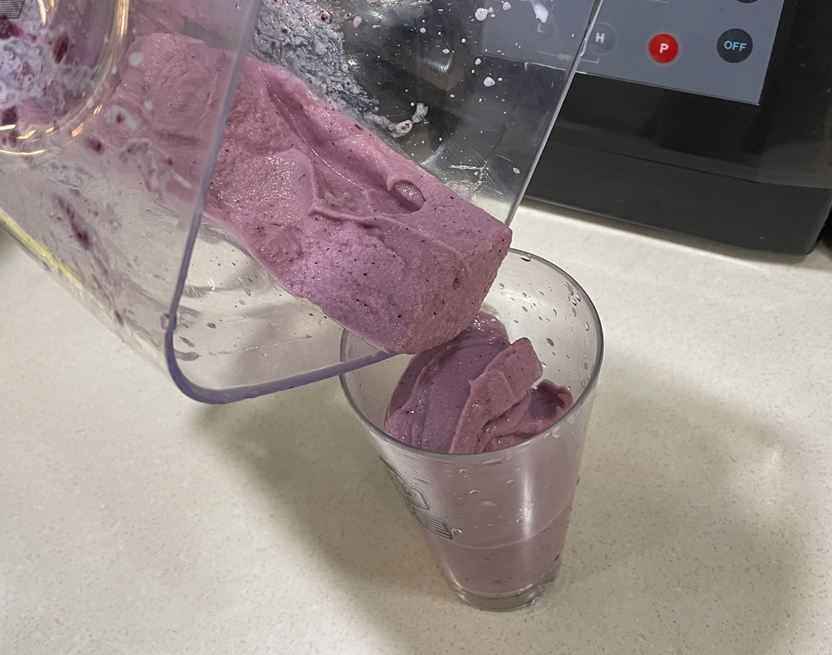
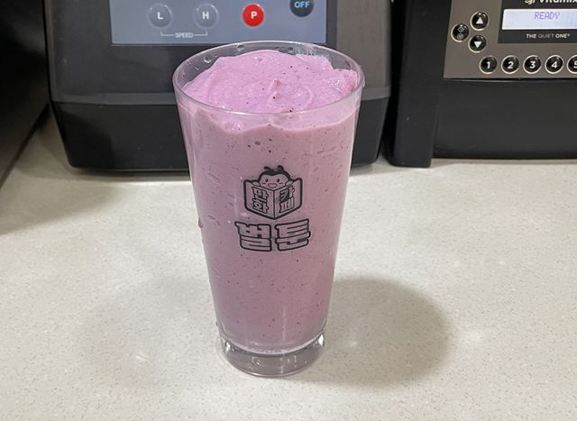

| 메뉴명 | 블루베리요거트 스무디 |
|---|---|
| 판매가격 | 6,500원 |
| 원재료 | 요거트파우더, 블루베리리플잼, 우유, 얼음, 카페시럽 |
| 사용 부자재 | 16oz 아이스컵, 리드뚜껑, 홀더, 버블티 빨대 |
제조방법

1
블랜더볼에 우유 150g을 넣는다.
블랜더볼에 우유 150g을 넣는다.

2
요거트파우더 3T(51g)을 넣는다.
요거트파우더 3T(51g)을 넣는다.

3
카페시럽 1펌프(10g)을 넣는다.
카페시럽 1펌프(10g)을 넣는다.

4
블루베리리플잼 70g을 넣는다.
블루베리리플잼 70g을 넣는다.

5
16온스 컵 가득 얼음을 담아 블랜더 볼에 넣는다.
16온스 컵 가득 얼음을 담아 블랜더 볼에 넣는다.

6
뚜껑을 덮어 #LOW 15초간 갈아준다.
뚜껑을 덮어 #LOW 15초간 갈아준다.

7
16온스 컵에 블루베리 요거트스무디를 담아준다.
16온스 컵에 블루베리 요거트스무디를 담아준다.

8
리드뚜껑을 덮고 버블티 빨대와 함께 제공한다.
리드뚜껑을 덮고 버블티 빨대와 함께 제공한다.